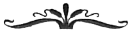

Eğer dönüp de uzaklarda kalmış geçmişe bakacak olursak, onu çok zorlanarak görebiliriz, çünkü o kadar fark edilemez bir hale geldi ki.
— MARCEL PROUST
kadim zamanlardan bir yazar
Vor, İnsanlık Ordusunun karargâhında âdet yerini bulsun diye kendisine verilen ofisinde dikilmiş, açık penceresinden serpiştiren akşam yağmuruna bakıyordu. Yaşanan bu sıcak öğleden sonrada yüzüne vuran hafif nem iyi gelmişti, çünkü Zimia son bir haftadır dayanılmaz derecede nemli ve sıcaktı. Yağmur hoş bir molaydı, ama Yüce Başar'ın kendini iyi hissetmesine yetmiyordu.
Geçen her gün hükümetin hareketsizliğine, yorgunluğuna ve zor kararları verme beceriksizliğine karşı verdiği savaşı kaybediyor gibiydi. Birlik temsilcileri gerekli pis işleri bitirmekten korkuyor ve geçen her yılla birlikte daha fazla şeyi unutuyorlardı. Yerel sorunlar ve politik oyunlarla o kadar meşguldüler ki süregelen Omnius ve simek tehdidinin öylece yok olup gideceğine kendilerini inandırmışlardı. Titanların bile uygun zamanı beklediğine ve Agamemnon'un terör saltanatına son vermediğine onları bir türlü inandıramıyordu.
Uzun savaşı sona ermişti. Büyük Temizlikten sonra uzun ve huzurlu bir kaçış arayan tek askeri lider Quentin Butler değildi. En büyük önceliği iyileşme ve yeniden yapılanma çalışmalarına vermek çok kolay olmuştu. Diğer insanlar da bütün o Cihat meselesini tarihe havale etmeyi istiyordu.
Ama aslında Cihat bitmemişti. Corrin ve simekler insanlığın gerçek tehdidi olmayı sürdürürken henüz bitemezdi. Bununla birlikte Vor bunu gören tek kişi gibiydi. Birlik bir savunma gücü oluşturup ona yetki vermeyi reddediyordu. Hatta son kalan Titanların gizlendiği bilinen Hessra'ya rutin bir keşif ziyaretine bile izin vermiyordu. Kaygısız aptallar!
Yüce Patrik ve soylular, bütün enerjilerini, her dünya üzerinde daha merkezleşmiş ve daha sıkı kontrol sağladıkları daha büyük bir imparatorluk yaratmak için yönetimlerini Bağlantısız Gezegenlere yaymanın içsel ekonomik sorunlarına adamışlardı. Yüce Patrik boynuna taktığı makam zincirine birkaç yeni halka daha eklemişti.
Fethedilen Senkronize Dünyalarda yüzlerce yıl boyunca yaşanmayacaktı, ama bazı daha saldırgan yaklaşımlı Birlik Dünyaları Bağlantısız Gezegenleri toplamak için olgunlaşmış meyveler olarak görüyordu. Birliğin her yerindeki doymak bilmez melanj talebi, Musibet'in bitmesiyle azalmamıştı. Yüce Dişibüyücü Ticia Cenva'nın rehberliğindeki nüfus ıslah programları da yıllardır sürüyordu.
Artık sofistike bilgisayarlı makineler yasaklandığı için kamu çalışmaları projelerinde kullanılmak üzere insan iş gücü havuzlarının oluşması gerekiyordu. Ve bu da çoğunluğunu uzak gezegenlerdeki Budislamcıların oluşturduğu insan köleler anlamına geliyordu. Birlikte, diğer insanları "tıpkı makinelerin yaptığı gibi" kullanmaya karşı bazı itirazlar olsa bile bu görüş fazla destek bulmuyordu.
Askeri görevlerin yerini idari çalışmalar, halka yönelik konuşmalar ve geçit törenlerinde boy göstermek aldığı için Vor, uzun zaman önce Parmentier'deki torunu Raquella'yı arama işine geri dönmüştü. Altı aylık bir çabanın sonucunda da onu nihayet bulmuştu.
Tedavi Edilemez Hastalıklar Hastanesinden kaçan Raquella ve Mohandas Suk, son derece kadim bir din olan Yahudiliği benimseyen dar görüşlü insanların bulunduğu uzak bir köye yerleşmişlerdi. Orada Musibet süresince halka yardım etmiş, gereksinimleriyle ilgilenmişti - ta ki daha kadim önyargılara dayanan yeni bir paranoyak grup köye girip her yeri yakana ve salgın için düşünen makineler kadar Yahudileri de suçlayana kadar.
Bu yüzden Raquella ve Mohandas yeniden taşınmış, kimliklerini gizleyen Yahudi köylülerden bazılarıyla birlikte çalışmalarına devam etmişlerdi. Salgın geçtikten sonra bile Parmentier'in iyileşmesi yıllar almıştı.
Vor, Raquella'yı bulduğu sırada çok ilkel şartlarda çalışıyordu. Tıbbi ekipmanının çoğu tahrip edilmişti, bu yüzden Vor ona gereksinim duyduğu her türlü yardımı göndermişti. Bunların arasında Raquella'nın güvenliğini sağlayacak donanım ve koruma da vardı. Bundan kısa bir süre sonra Vor, Raquella ve Mohandas'ı, Cihat Tıbbi Komisyonunun yerini alan İnsanlık Tıbbi Komisyonuna -ya da İntıp- yardım etmek için çağırmıştı. Sonra da kendi parasıyla onların kullanımı için hastane görevi gören bir uzay gemisi satın almıştı. Bu yeni gemi, Raquella ve tıbbi yardımcılarının önemli işlerini verimli bir şekilde gerçekleştirebilmeleri için galakside yolculuk yapmalarını sağlıyordu. Bunca zaman sonra bile yeni Musibet salgınlarının olmaması için Birlik dünyalarının yakından izlenmesi gerekiyordu. ...
Birilerinin tetikte olması gerekiyordu.
Birlik harcamalarının tümü vatandaşları için bu kadar yararlı değildi. Vor, Zimia meydanındaki spot ışıklarının aydınlattığı inşaat halindeki gösterişli Serena Katedraline baktı. Bu katedral Rayna Butler ve onun tarikatına üye olanların hükümeti yıllardır zorladığı çok sayıda projeden biriydi. Tamamlandığında o güne kadar inşa edilmiş en görkemli ve en pahalı dinsel yapı olacaktı. Vor, Serena'yı -gerçek Serena'yı- hâlâ hayatta olan herkesten çok daha fazla sevse ve saygı duysa bile yeniden yapılandırma enerjisinin başka bir yere yöneltilmesinin daha iyi olacağını düşünüyordu.
Serena Tarikatı, bütün o yanlış nedenlerden dolayı çok hızlı büyümüştü. Ağırbaşlı Rayna, makine karşıtı kutsal savaşına hâlâ sadık olsa da müritlerinin büyük bölümü solgun yüzlü genç kadını kendi güç üslerini kurmak için bir destek olarak kullanıyordu. Vor bunu açıkça görebiliyordu, ama başkaları fark etmiyor gibiydi.
Aşikâr sorunları ortaya koyduğundaysa hiç kimse "eski savaş kışkırtıcısı" Vor'u dinlemek istemiyordu.
Sabırsız bir şekilde derin derin iç çekti. Parlamento ve askeri liderler kendi gündemlerine göre hareket ediyor, Yüce Başar'ı karar verme sürecinin dışında bırakıyorlardı. Rütbesi işlevselden çok törensel bir hal almıştı. Vor hâlâ genç bir adam gibi görünmesine rağmen Faykan Butler bile onun uzun zaman önce hak ettiği emekliliği kabul etmesini önermişti. Vor, Xavier Harkonnen gibi bir şöhret aleviyle yok olup gitmeyecekti. Bu daha kötüydü. Vorian Atreides yalnızca belirsizliğe gömülüyordu.
Her sabah erkenden kalkıp şehirdeki işine giderken düşünceleri geriye dönüyor, katlandığı kişisel krizleri hatırlıyordu. Serena, Leronica ... hatta Yaşlı Metalkafa dediği Seurat.
İşlevsiz olmaktan nefret ediyordu.
Vor artık yüz otuzbeş yaşındaydı, ama kendini çok daha yaşlı hissediyordu. İnsanlık Ordusu karargâhındaki günlük görevlerini bitirdiğinde evde kendisini bekleyen hiç kimse olmuyordu. Oğulları artık geniş aileleri olan yetişkin adamlardı, üstelik hepsi de çok uzakta, Caladan'da yaşıyordu.
Bütün bunların dışında Vor, kendisini akıl hocası ve bir baba figürü olarak -Kagin ve Estes'ten çok daha fazla- gören Abulurd Harkonnen'i özlüyordu. Ama Abulurd bütün yılı Corrin sisteminde, Omnius'u gözaltında tutarak geçirmişti.
Sanki düşünceleri bir zamanlar himayesi altına aldığı kişiyi çağırmış gibi Abulurd'un caddeden askeri karargâha doğru kararlı adımlarla yürüdüğünü gördü. Üniforması kırışıktı, başını çiseleyen yağmurda önüne eğmiş ve yanında koruması olmadan hızlı hızlı yürüyordu. Hareketleri acil durumu gösteriyordu.
Vor, Abulurd'un aniden ortaya çıkışını hayal etmediğine yarı ikna olarak koridorda hızla yürüdü ve merdivenleri ikişer ikişer indi. Kapıya koşup içeri girmek üzere olan adamı şaşırttı. "Abulurd, sensin!"
Daha genç görünen subay, sanki kalan son enerjisini oraya gelmek için kullanmış gibi sendeledi. "Doğruca Corrin'den geliyorum, komutanım. Uzay-bükücü keşif gemilerinden birini aldım, çünkü makinelerden önce gelmeliydim. Ama ne kadar zamanımız kaldığını bilmiyorum."

Vor ve Abulurd, benzeri bir acil durum hissini paylaşmalarına rağmen geri kalan Parlamento üyeleri krizin abartıldığını düşünüyordu.
"Bunca yıl sonra düşünen makineler ne başarmayı umabilir ki? Onlar yenildiler!" dedi Giedi Prime temsilcisi.
"Ve eğer bu otomatik füzeler karıştırıcı sahadan geçtilerse jel-devrelerinin tamamen silinmiş olması gerekmiyor mu? Bu durumda da endişelenmemiz gereken hiçbir şey yok." Tombul Honru elçisi yüzünden halinden memnun bir gülümsemeyle arkasına yaslandı.
"Tek bir Omnius kopyası bile mevcutsa her zaman endişe edecek bir şey vardır." Vor adamların neden kendilerinden bu kadar emin olduklarını anlayamıyordu. Ama bu tutum şaşırtıcı değildi: Ne zaman bir sorunla karşılaşsalar, temsilciler her şey karışık ve sonuçsuz hale gelene kadar tartışırlardı.
Abulurd'un geri dönüşünden sonra Vor, koca bir haftayı toplantılar düzenleyip diğer komutanlarla bire bir konuşmalar yaparak geçirmişti. Abulurd, nöbetçi filodan aldığı ve garip füzeleri gösteren görüntüleri teslim etmişti. Sonunda da Yüce Başar doğrudan Parlamentoyla konuşmada ısrar etmişti. Hız ve yakıt değerlendirmelerine göre bu süper hızlı füzeler artık her an Salusa'ya gelebilirdi.
"Halkı kızdırmak ve İnsanlık Ordusunu güçlendirmek için bu tehdidi abartmadığınıza emin misiniz, Yüce Başar?" dedi Ixli zayıf bir adam. "Savaş hikâyelerinizi hepimiz duymuştuk."
"O hikâyeleri kendiniz yaşamadığınız için müteşekkir olmalısınız," diye gürledi Vor.
Ixli adam kaşlarını çattı. "Ben Musibet sırasında büyüdüm, Yüce Başar. Sizin kadar savaş deneyimimiz olmayabilir, ama hepimiz zor zamanlar geçirdik."
"Neden gölgeleri takip edelim ki?" diye mırıldandı Vor'un tanımadığı başka bir adam. "Gezegenin çevresinde devriye gezip Salusa'ya ulaşmadan önce füzelerin önünü kesecek keşif gemileri gönderelim. Tabii gelirlerse. Quentin Butler salgın hastalığı taşıyan füzelerle bu şekilde baş etmişti."
Toplantı sabah boyunca aynı havada devam etti. Sonunda, Parlamento Sarayının altın rengi kubbesinin altında duyduklarından tiksinen Vor dışarı çıktı. Taş basamakların en üst sırasında durarak bulutlu gökyüzüne baktı ve derin bir şekilde iç çekti.
"İyi misiniz, komutanım?" diye sordu Abulurd, süslü sütunların arasındaki oymalı taş basamaklara koşarak.
"Aynı eski aptallık. Kanun yapıcılar, çiftlik ücretleri, uzay yolculuğu düzenlemeleri, inşaat sübvansiyonları ve devasa kamu projeleri dışında bir şey konuşmayı unutmuşlar. İblis Ginjo'nun, savaşın en şiddetli döneminde neden Cihat Konseyini kurduğunu sonunda anladım. İnsanlar onların acımasız güçleri konusunda şikâyetçi olabilir, ama en azından hızlı ve verimli kararlar alınabiliyordu." Başını iki yana salladı. "İnsanlığın şu andaki en büyük düşmanı kayıtsızlık ve bürokrasi gibi görünüyor."
"Uzun dönemli tehditler veya projeler için dikkat süremiz çok kısıtlı," dedi Abulurd. "Toplumumuz normale -tabii bunun ne olduğunu hatırlayan varsa- dönmeye o kadar odaklandı ki, baş ettiğimizi düşündüğümüz bir tehditle ilgilenemiyoruz."
Yağmur artık öncekinden daha şiddetli bir şekilde başlamıştı, ama kıdemli subay yerinden kıpırdamıyordu. Birisi onu ıslanmaktan korumak için süspansörlü bir şemsiyeyi Vor'un başının üstüne getirdi. Yine Abulurd'du. Vor gülümsedi, ama bator hâlâ endişeli görünüyordu.
"Bu konuda ne yapacağız, komutanım? Füzeler yolda." Vor bir yanıt veremeden güçlü bir rüzgâr şemsiyeyi kapıp taş basamaklara doğru savurdu. Abulurd da peşinden koştu.
İkisi Parlamento Sarayına geri dönmek üzereyken süspansörlü şemsiyenin kontrolünü kazanan Abulurd uzakları işaret etti. Şemsiye yeniden rüzgâra kapıldı. Bu kez Abulurd onu takip etmedi. "Bakın - Corrin'den gelen füzeler!" diye inledi Abulurd. Kimsenin acil uyarısına kulak asmasını sağlayamadığı için telaş kadar utanç da hissediyordu.
Vor dişlerini sıktı. "İnsanlık Ordusu kendi propagandasına inanıyor. İnsanlar, sırf biz Cihadın bittiğine karar verdik diye, düşmanlarımızın bize karşı bir plan yapmadığına inanıyorlar." Derin bir nefes alırken, savaş komutanı olmanın nasıl bir şey olduğunu canlı bir şekilde hatırladı. "Görünüşe göre yardıma ihtiyacım var," dedi Abulurd'a. "Senin ve benim yapacak epey işimiz var.